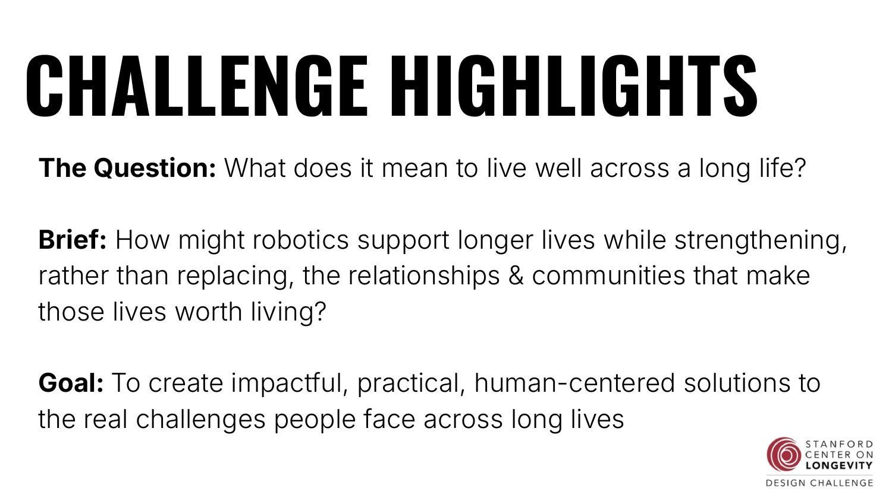
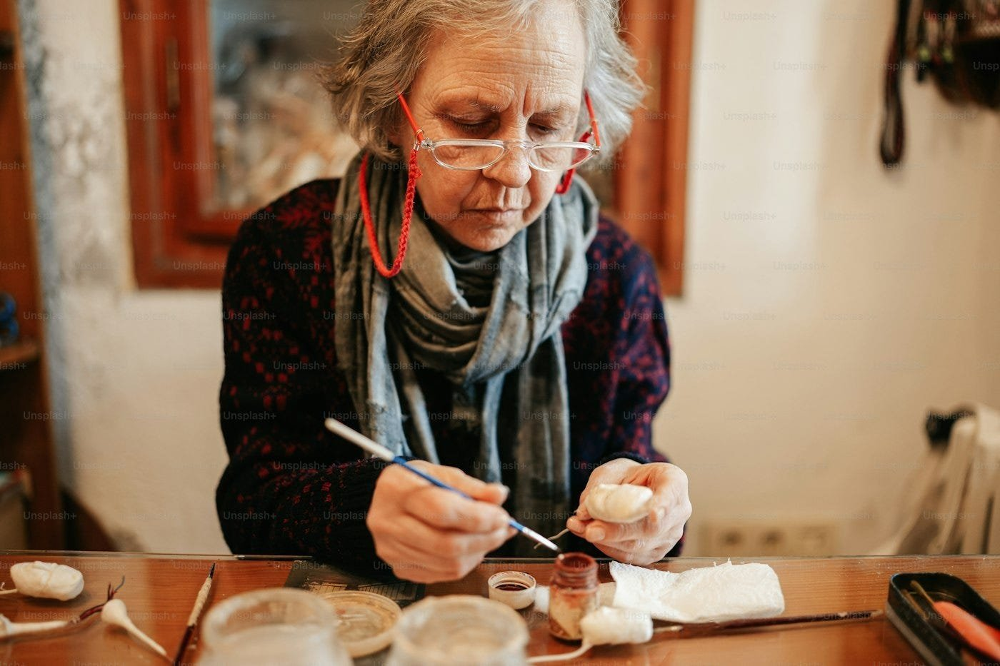
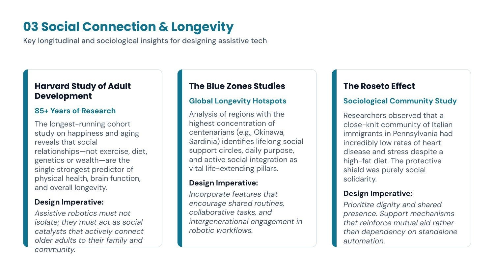
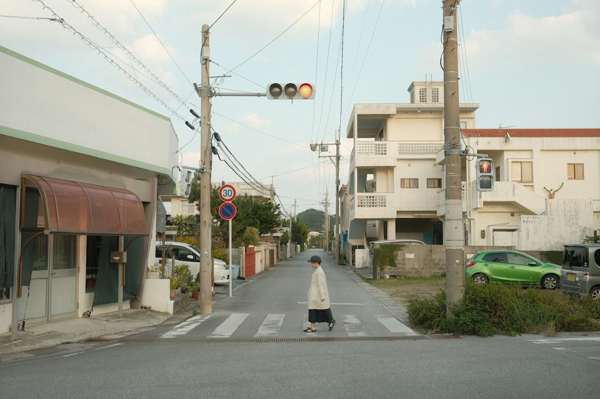
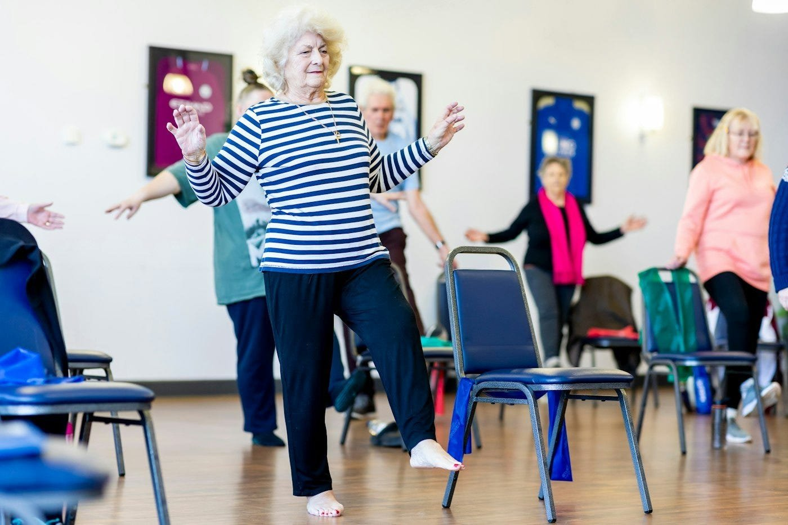
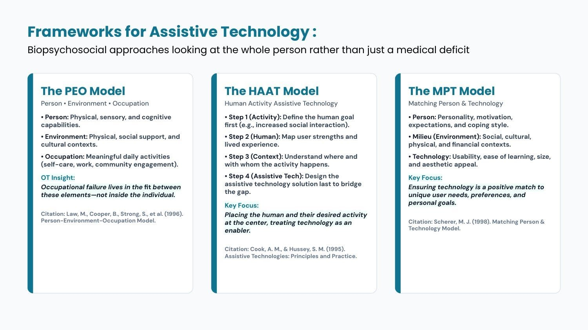
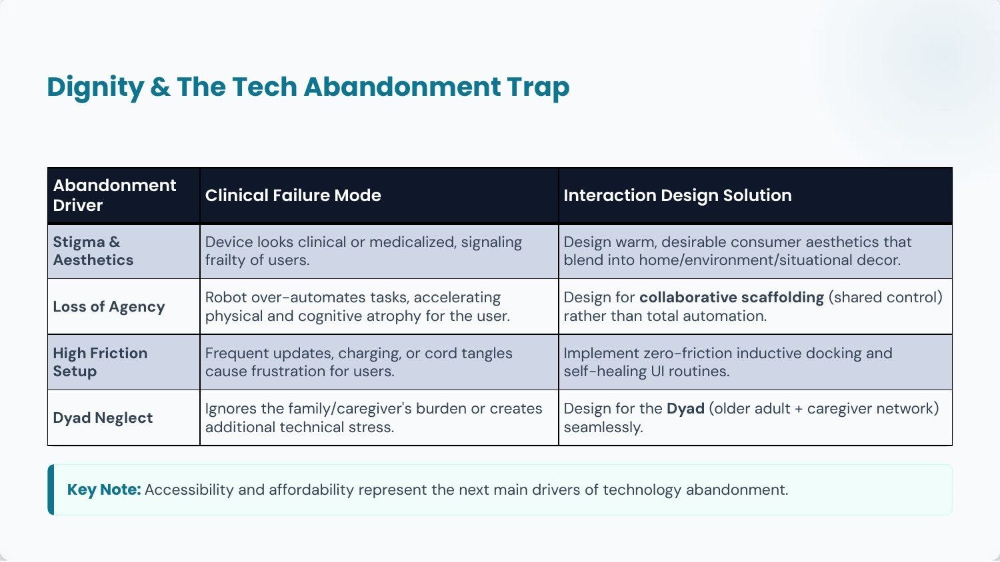
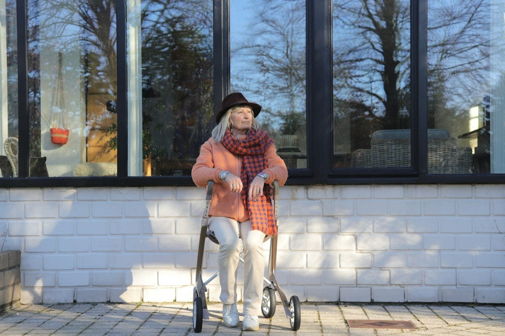
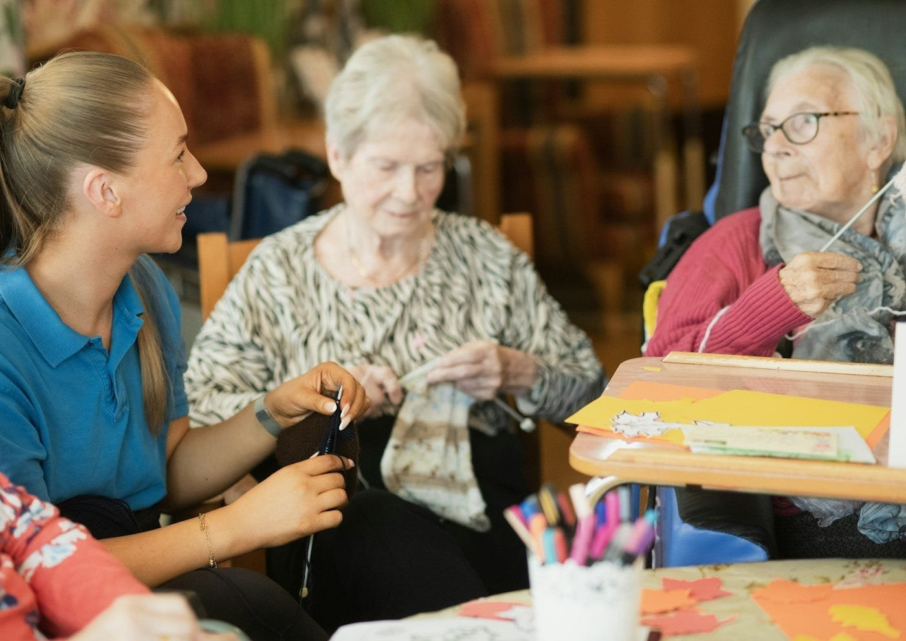

If robots are coming, how do we age more happily?
A weekly log from Studio Partnership II at SVA MFA Interaction Design, built around the Stanford Center on Longevity Design Challenge. Separate from my thesis posts.
This semester I’m in Studio Partnership II, a studio course in the MFA Interaction Design program at SVA. The whole course is one project: the Stanford Center on Longevity Design Challenge. This year’s theme is Human-Centered Robotics for Longevity. The brief asks how robots can support longer lives while strengthening, rather than replacing, the relationships and communities that make those lives worth living.

I read that sentence a few times. It isn’t really a question about robots. Before you can design one, you have to say what “worth living” means at 80 or 90. So I rewrote the brief for myself. If robots are coming, how do we age more happily? Not longer. Happier.
My plain answer, written down in week one so I can check it against myself later: a happier old age is one where you do more of what you like and less of what you don’t. Where things you used to be able to do, and then couldn’t, become possible again. And where what you treasure, your memories, the people and things you love, doesn’t fade or get forgotten. Robots and AI can be part of that answer. I do believe that. But a machine that helps with none of it is a gadget.

The older person I picture while writing this is my grandmother. She died in her seventies. She never paid much attention to how she used her body, not exercise, not the small daily upkeep. And she left almost nothing behind. Hardly any photographs. No video, no writing, no drawings. Everything I have of her is in my head.
The research we saw in class says much the same. The Harvard Study of Adult Development has followed people for over 85 years. Exercise, diet, genes and money did not predict who lived long and well. Close relationships did, by a wide margin. The Blue Zones studies found the same thing in places full of centenarians: shared routines, tasks people do together, a daily life that keeps you among other people. So a happier old age is not a quiet one. You still do things. You do them with people.


One thing about this class is different from any studio I’ve taken: our studio advisor, Michael Tranquilli, is an occupational therapist as well as a designer. Before this week my idea of OT was vague and mostly functional, something like helping people with daily tasks. His lecture made it much bigger than that. OT is a scientific way of looking at how we use our bodies, and it treats the whole thing as a system: the person, the routine, the environment, every step in between. We tend to file happiness and mental health under “the mind.” Listening to Michael, I realized how we use our bodies shapes our minds too, and that we badly underrate this.

OT frameworks like PEO and HAAT start with the person and what they want to do. The technology comes last. PEO says that when a person “fails” at an activity, the failure is not inside the person. It sits in the fit between the person, the environment and the task. Which changes what a robot is for. Fix the fit, so the person can keep doing the thing themselves.

Michael also showed why so many assistive devices end up in a drawer. They look medical, so using one announces to everyone that you are getting weaker. They do too much, and the person loses control, then skill. They are fiddly to set up. They forget the caregiver. A robot that makes someone more dependent, or more alone, is subtracting from a long life, whatever its spec sheet says.


Our instructor Pinar Guvenc added the rule I expect to hear all semester. Design with older adults, not for them. Most entries, she said, come from desk research and guesses about what people need.

So this is how I read the competition after one week. The judges will ask whether a design strengthens relationships or quietly replaces them. I want to answer that from the person’s side, not from the robot’s feature list. The machine should clear away whatever stands between a person and the things and people they love. Then get out of the way.
I came into this interested in art and in older adults. Next week, why.